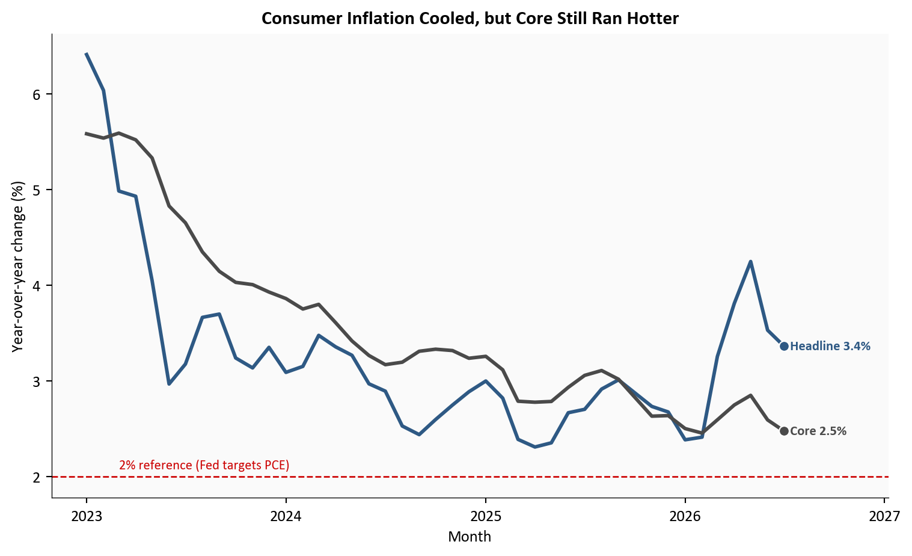
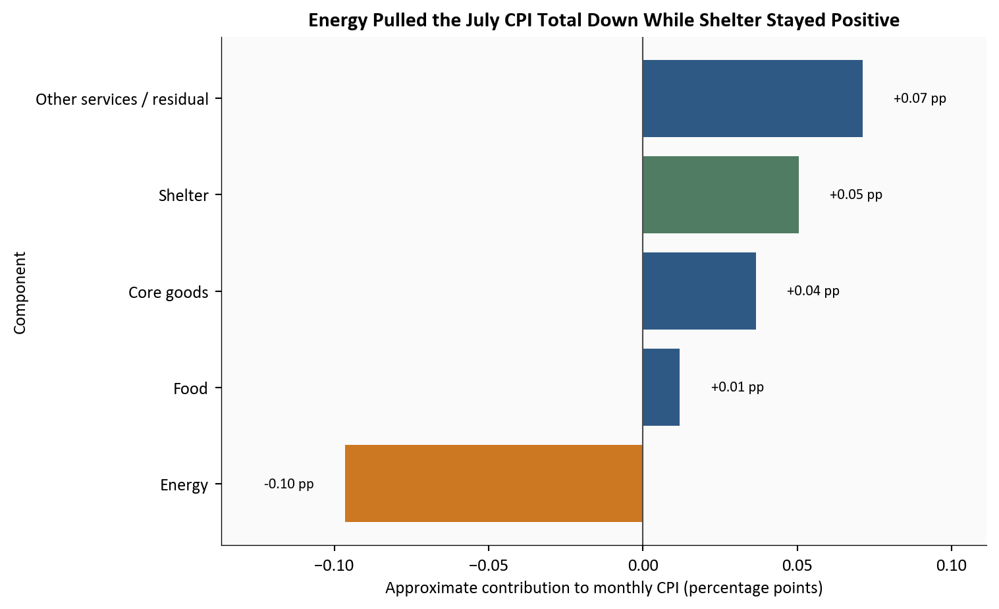
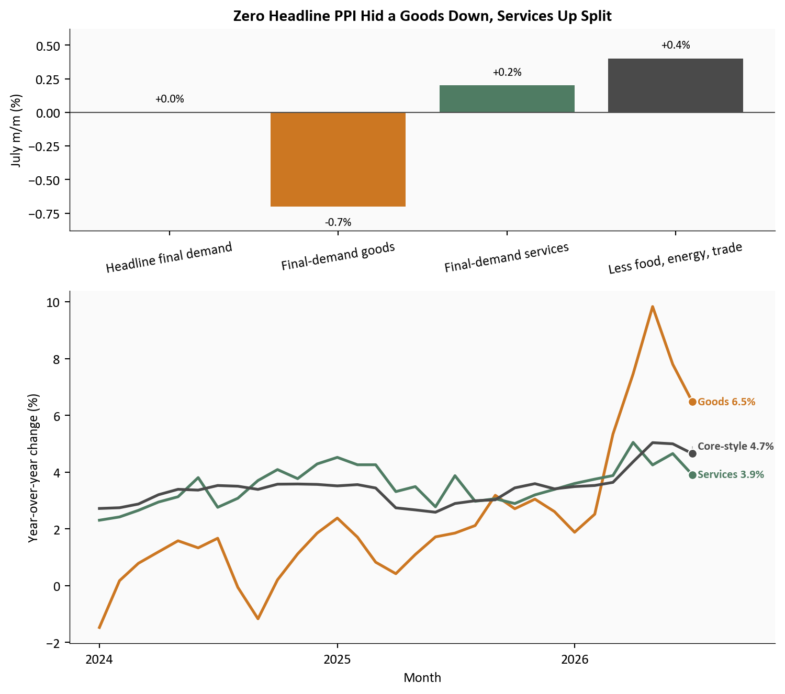
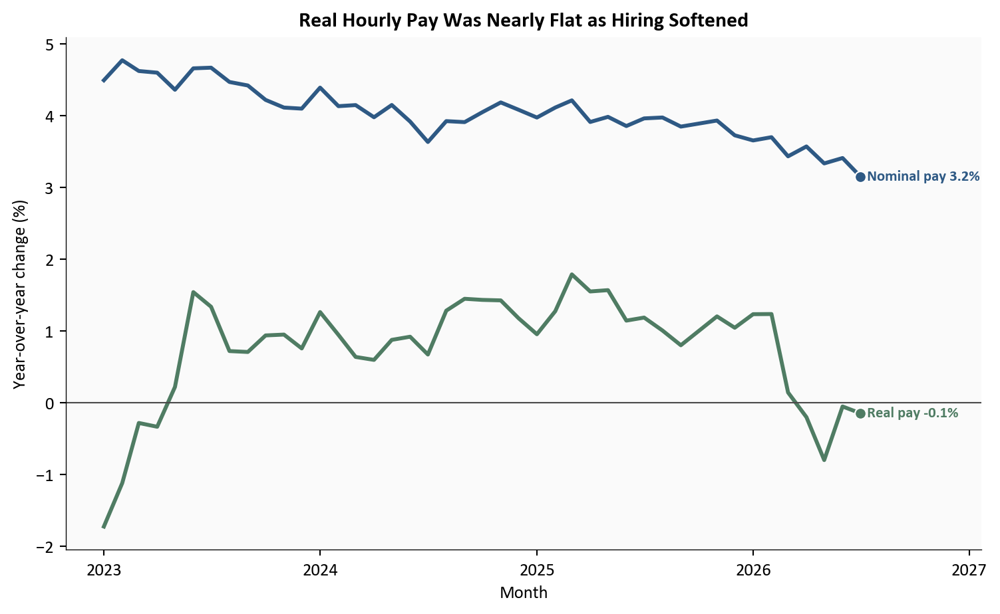

Headline CPI
+0.1%
y/y 3.4%
Core CPI
+0.2%
y/y 2.5%
Final-demand PPI
0.0%
y/y 4.7%
Real hourly pay
-0.1%
year over year
Latest price and pay data: July 2026
Yoram Gilboa
August 14, 2026
Last week’s jobs post established the labor side of the story: July payrolls fell 23k, participation slipped to 61.4%, and the labor market looked softer than the headline had suggested. This post picks up directly from that point by asking the next policy question: did July inflation and producer prices also cool enough to change the September Fed calculus?
July consumer inflation rose just 0.1% month over month and 3.4% year over year, while core CPI increased 0.2% on the month and 2.5% from a year earlier. One day later, producer prices were even softer at the headline level, with final-demand PPI unchanged on the month and up 4.7% year over year. Set beside the already-published weak jobs report, the price data gave Chair Kevin Warsh and markets more room to pause without implying that inflation had returned to target.
The complete pipeline is included with this draft:
scripts/01_fetch_data.py downloads validated FRED series for CPI, PPI, wages, payrolls, participation, unemployment, and the policy-rate range.scripts/02_clean_data.py calculates monthly change, year-over-year change, real wage growth, and approximate July CPI contributions for the cleaned dataset.scripts/04_compute_stats.py writes every prose and metric-card value, plus the release-note manual inputs, to stats/summary_stats.json.Run the scripts in numeric order from this post directory, then render index.qmd. The scripts produce the cleaned data and stats/summary_stats.json, and the four chart blocks in this post save the figure files under images/. The workflow uses pandas and matplotlib plus official BLS, FRED, and Federal Reserve sources.
CPI, or the Consumer Price Index, measures changes in prices paid by households. Core CPI removes food and energy so readers can see the slower-moving part of inflation more clearly. PPI final demand measures the prices producers receive for goods and services sold to the rest of the economy, which is why it is often described as an upstream inflation gauge.
Nonfarm payrolls are the Bureau of Labor Statistics count of jobs across private employers and government, excluding farm work and a few smaller categories. Mixing prices with the prior jobs numbers is useful because the Fed has a dual mandate: stable prices and maximum employment. A lower unemployment rate that comes with lower labor-force participation is less reassuring because it can mean some people stopped looking for work rather than found jobs.
Latest price and pay data: July 2026
The Fed’s dual mandate means it is supposed to pursue price stability and maximum employment at the same time. The August 7 jobs post pushed attention toward the employment side by showing weaker payroll breadth and lower participation. This follow-up shifts to the price side of the same decision. When inflation is high and hiring is strong, the policy answer is usually straightforward: keep policy tight. When inflation is cooling and hiring is weakening, the tradeoff becomes harder because the same rate setting affects both sides of the economy.
Headline CPI includes everything households buy, including volatile food and energy. Core CPI strips out food and energy so analysts can see whether inflation is cooling beyond gasoline and utility bills. PPI final demand is different again: it tracks the prices producers receive, so it can signal whether pipeline pressure is fading before it reaches consumer shelves or service invoices.
That is why the July mix matters. A lower unemployment rate would usually look reassuring, but it becomes less comforting when participation falls at the same time. The prior jobs report already showed that softer hiring was not broad-based strength. July CPI and PPI now add the other half of the story: price pressure also cooled, though not enough to declare inflation solved.
The first point is the cleanest. July headline CPI slowed to 3.4%, down from 3.5% in June, while core CPI slowed to 2.5% from 2.6%.
That is meaningful progress because both measures moved in the right direction. But the gap between them also matters. Headline inflation is cooling faster because energy is falling again, while core inflation is still being held up by shelter and slower-moving services. That difference is exactly why Fed officials resist treating one soft gasoline-driven month as a complete victory.
# Compare the consumer inflation rates people see in headlines with the slower
# core measure that Fed officials watch for persistence.
plot = df.loc["2023-01-01":, ["cpi_headline_release_yoy", "cpi_core_release_yoy"]].dropna()
fig, ax = plt.subplots(figsize=(8.0, 4.9))
ax.plot(plot.index, plot["cpi_headline_release_yoy"], color=COLORS["primary"], linewidth=2.2)
ax.plot(plot.index, plot["cpi_core_release_yoy"], color=COLORS["neutral"], linewidth=2.2)
ax.axhline(2.0, color=COLORS["fed_target"], linestyle="--", linewidth=1.0)
ax.text(plot.index[2], 2.08, "2% reference (Fed targets PCE)", color=COLORS["fed_target"], fontsize=8.5)
date_span = plot.index[-1] - plot.index[0]
ax.set_xlim(right=plot.index[-1] + date_span * 0.15)
ax.set_ylabel("Year-over-year change (%)")
ax.set_xlabel("Month")
ax.set_title("Consumer Inflation Cooled, but Core Still Ran Hotter", fontweight="bold")
ax.xaxis.set_major_locator(mdates.YearLocator())
ax.xaxis.set_major_formatter(mdates.DateFormatter("%Y"))
ax.yaxis.set_major_formatter(ticker.StrMethodFormatter("{x:,.0f}"))
label_endpoints(
ax,
[
{
"x": plot.index[-1],
"y": plot.iloc[-1]["cpi_headline_release_yoy"],
"text": f"Headline {fmt(plot.iloc[-1]['cpi_headline_release_yoy'])}%",
"color": COLORS["primary"],
},
{
"x": plot.index[-1],
"y": plot.iloc[-1]["cpi_core_release_yoy"],
"text": f"Core {fmt(plot.iloc[-1]['cpi_core_release_yoy'])}%",
"color": COLORS["neutral"],
},
],
gap_frac=0.08,
)
plt.tight_layout()
fig.savefig(IMG_DIR / "cpi-headline-core-yoy.png", dpi=180, bbox_inches="tight")
Source: Bureau of Labor Statistics Consumer Price Index data via FRED (CPIAUCSL, CPILFESL).
What this chart shows in plain English: Inflation came down in July, but the faster improvement was in the more volatile headline measure. Core inflation moved down too, which is encouraging, yet it still tells the Fed that underlying price pressure has not fully returned to normal.
The monthly composition helps explain why the headline was only 0.1%. Shelter still added upward pressure, food was mildly positive, and other services remained a small net positive. Energy moved the other way, subtracting from the total after another monthly decline.
This matters for policy because a soft top-line number driven only by gasoline would be easy to dismiss. July was not that simple. Energy clearly helped, but the rest of the basket did not re-accelerate. Shelter rose just 0.1% in the month, and core goods stayed subdued at 0.2%. That is not a perfect all-clear, but it is broader cooling than a single pump-price story.
# Use the latest month only so the contribution story stays focused and easy to
# read. Reminder: these are approximate fixed-weight contributions, not the
# official BLS chained decomposition.
latest_date = df["cpi_headline_mom"].dropna().index[-1]
contrib = pd.Series(
{
"Energy": df.loc[latest_date, "contrib_energy_mom_pp"],
"Food": df.loc[latest_date, "contrib_food_mom_pp"],
"Core goods": df.loc[latest_date, "contrib_core_goods_mom_pp"],
"Shelter": df.loc[latest_date, "contrib_shelter_mom_pp"],
"Other services / residual": df.loc[latest_date, "contrib_other_services_mom_pp"],
}
).sort_values()
colors = [
COLORS["warning"] if name == "Energy" else
COLORS["secondary"] if name == "Shelter" else
COLORS["accent"] if value < 0 else
COLORS["primary"]
for name, value in contrib.items()
]
fig, ax = plt.subplots(figsize=(8.0, 4.9))
bars = ax.barh(contrib.index, contrib.values, color=colors)
ax.axvline(0, color=COLORS["neutral"], linewidth=0.8)
span = contrib.max() - contrib.min()
padding = max(span * 0.06, 0.01)
for bar, value in zip(bars, contrib.values):
x = value + padding if value >= 0 else value - padding
ax.text(
x,
bar.get_y() + bar.get_height() / 2,
f"{value:+.2f} pp",
va="center",
ha="left" if value >= 0 else "right",
fontsize=8.5,
)
ax.set_title("Energy Pulled the July CPI Total Down While Shelter Stayed Positive", fontweight="bold")
ax.set_xlabel("Approximate contribution to monthly CPI (percentage points)")
ax.set_ylabel("Component")
ax.set_xlim(contrib.min() - padding * 4, contrib.max() + padding * 4)
plt.tight_layout()
fig.savefig(IMG_DIR / "july-cpi-contributions.png", dpi=180, bbox_inches="tight")
Source: Bureau of Labor Statistics CPI data via FRED, with approximate fixed-weight contributions using BLS relative-importance shares.
What this chart shows in plain English: Households still faced rising shelter and service costs, but cheaper energy offset enough of that pressure to keep the overall monthly CPI increase very small. That balance is friendlier for the Fed than a report where every major category was running hot.
July PPI initially looks even softer than CPI because final-demand PPI was unchanged on the month. The deeper story is that this flat reading came from offsetting forces. Final-demand goods fell -0.7%, helped by a -3.1% drop in energy, while final-demand services rose +0.2%. The cleaner core-style pipeline gauge, which removes food, energy, and trade services, increased +0.4% and remained 4.7% above a year earlier.
That split is why this was a genuinely softer report, but not a uniformly soft one. Producers of goods faced less pressure. Service-side pricing power did not vanish. For the Fed, this reduces the immediate case for another hike while preserving caution about sticky domestic services.
# Show both the July monthly offset and the broader annual backdrop in one
# figure. The monthly bars explain the zero headline. The lower panel shows why
# services still matter to policymakers.
monthly_split = pd.Series(
{
"Headline final demand": stats["ppi_final_demand_mom"],
"Final-demand goods": stats["ppi_final_demand_goods_mom"],
"Final-demand services": stats["ppi_final_demand_services_mom"],
"Less food, energy, trade": stats["ppi_less_food_energy_trade_mom"],
}
)
trend = df.loc["2024-01-01":, [
"ppi_final_demand_goods_yoy",
"ppi_final_demand_services_yoy",
"ppi_less_food_energy_trade_yoy",
]].dropna()
fig, (ax1, ax2) = plt.subplots(
2, 1, figsize=(8.0, 7.0), sharex=False,
gridspec_kw={"height_ratios": [1.2, 2.1]}
)
bar_colors = [COLORS["accent"], COLORS["warning"], COLORS["secondary"], COLORS["neutral"]]
bars = ax1.bar(monthly_split.index, monthly_split.values, color=bar_colors)
ax1.axhline(0, color=COLORS["neutral"], linewidth=0.8)
for bar, value in zip(bars, monthly_split.values):
y = value + 0.06 if value >= 0 else value - 0.08
ax1.text(bar.get_x() + bar.get_width() / 2, y, f"{value:+.1f}%",
ha="center", va="bottom" if value >= 0 else "top", fontsize=8.5)
ax1.set_ylabel("July m/m (%)")
ax1.set_title("Zero Headline PPI Hid a Goods Down, Services Up Split", fontweight="bold")
ax1.tick_params(axis="x", rotation=10)
ax1.set_ylim(monthly_split.min() - 0.18, monthly_split.max() + 0.22)
ax2.plot(trend.index, trend["ppi_final_demand_goods_yoy"], color=COLORS["warning"], linewidth=2.0)
ax2.plot(trend.index, trend["ppi_final_demand_services_yoy"], color=COLORS["secondary"], linewidth=2.0)
ax2.plot(trend.index, trend["ppi_less_food_energy_trade_yoy"], color=COLORS["neutral"], linewidth=2.0)
span = trend.index[-1] - trend.index[0]
ax2.set_xlim(right=trend.index[-1] + span * 0.14)
ax2.set_ylabel("Year-over-year change (%)")
ax2.set_xlabel("Month")
ax2.xaxis.set_major_locator(mdates.YearLocator())
ax2.xaxis.set_major_formatter(mdates.DateFormatter("%Y"))
label_endpoints(
ax2,
[
{
"x": trend.index[-1],
"y": trend.iloc[-1]["ppi_final_demand_goods_yoy"],
"text": f"Goods {fmt(trend.iloc[-1]['ppi_final_demand_goods_yoy'])}%",
"color": COLORS["warning"],
},
{
"x": trend.index[-1],
"y": trend.iloc[-1]["ppi_final_demand_services_yoy"],
"text": f"Services {fmt(trend.iloc[-1]['ppi_final_demand_services_yoy'])}%",
"color": COLORS["secondary"],
},
{
"x": trend.index[-1],
"y": trend.iloc[-1]["ppi_less_food_energy_trade_yoy"],
"text": f"Core-style {fmt(trend.iloc[-1]['ppi_less_food_energy_trade_yoy'])}%",
"color": COLORS["neutral"],
},
],
gap_frac=0.08,
)
plt.tight_layout()
fig.savefig(IMG_DIR / "ppi-goods-services-split.png", dpi=180, bbox_inches="tight")
Source: Bureau of Labor Statistics Producer Price Index data via FRED (PPIFIS, PPIFDG, PPIFDS, PPIFDE, WPSFD49116).
What this chart shows in plain English: Producer prices were soft where energy and goods dominate, but not where labor-intensive services dominate. That lowers the chance that the Fed feels forced to hike immediately, yet it also explains why markets did not jump straight from “less likely hike” to “imminent cut.”
One useful way to connect the price reports back to the weak jobs backdrop is to look at real wage growth. Nominal average hourly earnings rose 3.2% over the year in July, while inflation-adjusted hourly pay was -0.1%. The softer CPI backdrop limited the loss of purchasing power, but it did not produce a real wage gain.
This does not erase the labor-market concerns from the August 7 post. A household cannot spend a rate of change. Someone who is out of work still feels the labor slowdown much more sharply than a near-flat real wage reading. For people who are employed, cooler inflation prevented a larger purchasing-power decline, but the data do not yet show renewed real wage growth. That is part of why the dual-mandate balance feels less one-sided than it did when payroll softness was arriving without new inflation relief.
# Deflating hourly earnings by CPI converts pay growth into purchasing-power
# growth. This lightly links the inflation story back to the weaker labor data.
plot = df.loc["2023-01-01":, ["ahe_total_private_yoy", "real_ahe_yoy"]].dropna()
fig, ax = plt.subplots(figsize=(8.0, 4.9))
ax.plot(plot.index, plot["ahe_total_private_yoy"], color=COLORS["primary"], linewidth=2.2)
ax.plot(plot.index, plot["real_ahe_yoy"], color=COLORS["secondary"], linewidth=2.2)
ax.axhline(0, color=COLORS["neutral"], linewidth=0.8)
date_span = plot.index[-1] - plot.index[0]
ax.set_xlim(right=plot.index[-1] + date_span * 0.16)
ax.set_ylabel("Year-over-year change (%)")
ax.set_xlabel("Month")
ax.set_title("Real Hourly Pay Was Nearly Flat as Hiring Softened", fontweight="bold")
ax.xaxis.set_major_locator(mdates.YearLocator())
ax.xaxis.set_major_formatter(mdates.DateFormatter("%Y"))
label_endpoints(
ax,
[
{
"x": plot.index[-1],
"y": plot.iloc[-1]["ahe_total_private_yoy"],
"text": f"Nominal pay {fmt(plot.iloc[-1]['ahe_total_private_yoy'])}%",
"color": COLORS["primary"],
},
{
"x": plot.index[-1],
"y": plot.iloc[-1]["real_ahe_yoy"],
"text": f"Real pay {fmt(plot.iloc[-1]['real_ahe_yoy'])}%",
"color": COLORS["secondary"],
},
],
gap_frac=0.08,
)
plt.tight_layout()
fig.savefig(IMG_DIR / "real-wages-july-2026.png", dpi=180, bbox_inches="tight")
Source: Bureau of Labor Statistics average hourly earnings and CPI data via FRED (CES0500000003, CPIAUCSL).
What this chart shows in plain English: Nominal pay almost kept pace with consumer prices, but employed households did not gain purchasing power over the year. Cooler inflation prevented a larger decline without neutralizing the weak payroll report.
The August 7 jobs post and this CPI-PPI follow-up now read as two halves of one macro update. First, the labor report showed that employment conditions had softened more than the earlier headlines implied. Next, the July CPI and PPI releases showed that price pressure also cooled. That sequence matters more than either release on its own because it changes the balance of risks facing the Fed.
Consumer prices rose slowly, core inflation eased, and producer prices no longer pointed to an immediate new wave of upstream pressure. Put beside the weak payroll report, that was enough to create more room for patience.
But patience is not the same as comfort. Core CPI at 2.5% remained above a 2 percent consumer-inflation reference, while the PPI ex-food-energy-trade gauge at 4.7% showed elevated upstream pressure. Neither series is the Fed’s formal PCE target measure, but both argue against declaring price stability restored. Chair Warsh can legitimately say the labor side has softened and the inflation side has improved, while also saying the Committee has not yet finished the job on price stability.
That is why the market reaction looked like repricing, not capitulation. The first post made another hike harder to justify by weakening the labor side of the case. This post weakens it further by showing cooler inflation and softer upstream goods prices. September tightening became less likely because the incoming data no longer argued for urgency. It did not become impossible because the service side of inflation is still firm enough to keep the hawkish case alive if the next month re-heats.
For the Fed, September, and Jackson Hole. The easiest policy reading is that July created dual-mandate space. With the target range still at 3.5% to 3.8% after the 07/29/2026 meeting, the Committee can arrive at Jackson Hole in late August 2026 talking more about optionality and less about near-term compulsion. A September hike is still possible, but the burden of proof is higher than it was before the weak payroll and softer price run.
For households. Slower inflation matters even when it does not feel dramatic. A 0.1% monthly CPI increase is much easier to absorb than the hotter prints households saw earlier in the year. Shelter still rose, food was not flat, and real hourly pay remained slightly negative over the year. Lower energy prices limited the squeeze, but they did not create broad purchasing-power gains.
For investors. The immediate takeaway is lower near-term hike risk, not a one-way rally story. Softer headline inflation and flat headline PPI help rates markets, but firm service pricing and still-elevated core measures keep two-way risk alive. That means upcoming speeches, especially around Jackson Hole, may move yields more through tone and reaction function than through any single backward-looking price print.
For property and casualty insurers and actuaries. The July mix is mildly constructive, but not cleanly disinflationary, for claim costs. Medical care services still rose 0.6% in the month, while the BLS reported that motor-vehicle-insurance CPI fell 0.3% after a larger June decline. Softer hiring can also offer gradual relief on wage pressure for claims-handling and repair labor, but that relief is likely gradual rather than immediate.
Monthly inflation and payroll data are revised, and short-run momentum can look different after seasonal-factor updates. The July contribution chart uses fixed relative-importance weights, so it is a directional decomposition rather than the official chained BLS contribution method.
The P&C discussion is intentionally light and should not be read as a full reserving or pricing analysis.
| Series or source | Use in this post | Source |
|---|---|---|
| CPIAUCSL, CPILFESL, CPIENGSL, CPIFABSL | Headline, core, energy, and food CPI trend | FRED |
| CUSR0000SAH1, CUSR0000SACL1E, CUSR0000SAM2 | Shelter, core goods, and medical care services CPI detail | FRED |
| PPIFIS, PPIFDG, PPIFDS, PPIFDE, WPSFD49116 | PPI headline, goods, services, energy, and core-style pipeline gauge | FRED |
| PAYEMS, UNRATE, CIVPART, CES0500000003 | Payroll, unemployment, participation, and average hourly earnings context | FRED |
| DFEDTARL, DFEDTARU | Federal funds target range context | FRED |
| July 2026 CPI release | Published July CPI summary and motor-vehicle-insurance reference | BLS |
| July 2026 PPI release | Published July PPI summary and component detail | BLS |
| 07/29/2026 FOMC statement | Policy setting under Chair Warsh and the 9-3 vote | Federal Reserve |
Python pulls the validated FRED series into a reproducible raw file, converts them into monthly and annual inflation and wage measures, and stores the prose values in stats/summary_stats.json. pandas handles the transformations, and matplotlib draws every chart. The BLS motor-vehicle-insurance monthly reading is the only manual value and is marked in the pipeline so it can be reviewed before publication.
Data current as of 08/14/2026. July CPI released 08/12/2026; July PPI released 08/13/2026; prior jobs analysis published 2026-08-07.